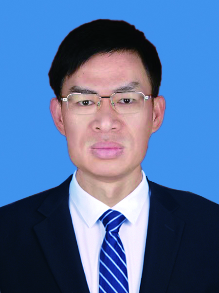

传承寄语
老药工经验来自长期实践，也需要在新时代被系统整理、规范表达和持续传播。传承工作室以“守正传薪，炮制有道”为主题，重视技艺背后的质量意识、责任意识和临床服务价值。
研究方向
围绕中药制剂、中药炮制、中医医院药事管理及中成药生产管理，工作室将传统经验与现代质量控制要求结合，服务医院药学发展和中医药人才培养。
传承贡献
通过建设专题网站、整理公开资料、开展调研交流与培训活动，工作室将逐步形成可展示、可追溯、可推广的传承成果体系。
以中药制剂、中药炮制、中医医院药事管理及中成药生产管理为主要研究方向，持续推动传统技艺传承与青年药师培养。

传承人档案
职务：党委委员、副院长
个人介绍：主任药师，执业中药师
主要兼职：湖南省中医药和中西医结合学会中药专业委员会常务副主委，湖南省中医药和中西医结合学会中药种植与炮制专业委员会副主委。
研究方向：中药制剂、中药炮制、中医医院药事管理及中成药生产管理。
长期从事中药药学、中药制剂、中药炮制和医院药事管理工作，具备丰富的一线实践与管理经验。
关注中药材与饮片质量、炮制工艺传承、医院制剂规范化和中成药生产管理。
通过调研交流、专题培训、跟师学习和实践教学，推动老药工经验活态传承。
老药工经验来自长期实践，也需要在新时代被系统整理、规范表达和持续传播。传承工作室以“守正传薪，炮制有道”为主题，重视技艺背后的质量意识、责任意识和临床服务价值。
围绕中药制剂、中药炮制、中医医院药事管理及中成药生产管理，工作室将传统经验与现代质量控制要求结合，服务医院药学发展和中医药人才培养。
通过建设专题网站、整理公开资料、开展调研交流与培训活动，工作室将逐步形成可展示、可追溯、可推广的传承成果体系。